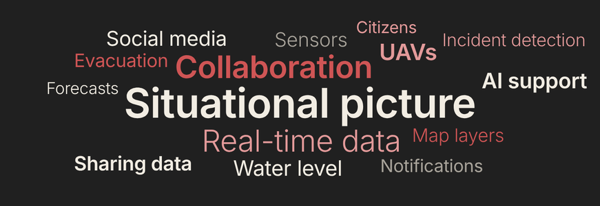

Human-computer interaction researcher and developer
Task Assistance Beyond the Screen
I explore how augmented reality (AR) can support us by bridging the real and the virtual world. I work with end-users, from the first workshop to the field test.
I am a research associate in the Human-Computer Interaction group at the University of Hamburg. I have submitted my PhD thesis, and my defense is planned for November 2026. I am interested in exploring how technology can support us in interacting with the real world. In particular, my interest lies in AR and immersive technologies in general.
I design concepts together with the people who use them, develop applications to be deployed in the real world, and study their effectiveness and perceived usefulness in lab and field studies.
Research Projects
During my PhD at the University of Hamburg, I was involved in several research projects, mostly third-party funded and one commissioned by industry, in close collaboration with industry and research partners. A focus was to explore how AR supports infrastructure professionals in planning and maintenance.
A toolset for hyper-realistic and XR-based human-human and human-machine interactions
Development of technologies for more convincing presence in extended reality (XR), organized in three technical pillars with one SDK each: holoportation, haptics, and intelligent virtual humans.
Role
Co-leading the technical committee
Co-leading the technical pillar on intelligent virtual humans, developing an open-source Unity SDK
Conducting the user-centered evaluation of all technical pillars
Development of a port planning tool based on a digital twin that enables collaborative planning and simulation of traffic scenarios. As a technical platform, we explored a multi-touch table in combination with AR.
Role
Developing the port planning tool (3D visualization and interaction)
Dynamic situation creation and support for rescue forces in complex crisis situations
Creation of a dynamic situational picture of crisis and disaster situations from continuously integrated real-time data, giving rescue forces comprehensive orientation and situation assessment. We explored how we can support involved organizations in their collaboration, including police, firefighters, and the port authority.

Role
Contributing to the research grant proposal
Leading the requirement analysis for the situational picture
Commissioned research for Hamburger Energienetze via HITeC Hamburg
AR Inspection Support for Gas Facilities
Investigation of how AR can support technicians in inspecting facilities of the local gas network operator. Together with stakeholders, especially technical staff, we identified requirements in a user-centered process and developed a prototype, with use cases such as 3D visualization of installed components, digital forms in AR, and the display of underground pipelines.
Role
Analyzing the requirements of technicians
Developing prototypes in an iterative process
Conducting a long-term field study to evaluate the final prototype
Knowledge networking and collaboration through augmented reality in production-related services
Development of a digitalization assistant that makes AR/VR more accessible to small and medium-sized enterprises by supporting the development of AR/VR applications with a no-code/low-code approach. A main use case was the use of AR for maritime navigation in the port of Hamburg.
Alongside my research, I taught at the Human-Computer Interaction group of University of Hamburg and supervised student theses.
Summer 2025 – Winter 2025/26
Master Project
Project supervision
Winter 2024/25, Winter 2025/26, Winter 2026/27
3D Displays
Lecture and exercise in the lecture series “User Interface Software and Technology”
Summer 2024
Interactive Multimedia Systems
Exercises
Winter 2022/23
Usability Engineering & User Experience Design
Exercises
Supervised theses (Bachelor and Master)
2026
From Planning to Reconciliation: Reducing Articulation Work in Shared Households through Contestable AI
2026
Progressive Disclosure of Concept Maps Beyond Conversational-Agent Guidance: A VR Instructional Approach for Cabin Safety and Emergency Procedures
2026
A Digital Companion for a Surf Competition: User-Centered Development of an Event App for the Adh Open
2025
User Interactions on Multi-Touch Surfaces: Effects of Adjustable Tilt and Height
2025
Comparing UX Design Trends (Flat Design vs. Skeuomorphism) and Interaction Methods (Natural vs. Universal) in Office-Themed Augmented Reality Environments
2025
Die Kunst der Platzierung: Evaluierung einer Taxonomie für die Anordnung von Benutzeroberflächen-Elementen in einem kombinierten Touchtisch-Augmented-Reality-Setting
2025
Potenzielle Einsetzbarkeit von Augmented Reality in der Straßen- und VerkehrsplanungPublished as a paper →
2025
Augmented Reality based Soil Moisture Visualization for Optimized Irrigation Decision on Sport FieldsPublished as a paper →
2025
Mold vs. Draw: Comparison and Evaluation of two Terrain Design Techniques in Augmented Reality
2024
Investigation of the Effects of Technical Parameters in Augmented Reality in the Context of Data VisualizationPublished as a paper →
2024
Evaluating the Effectiveness of Combined Nudging Techniques in E-Commerce: A Focus on Scarcity, Social Proof, and Salience Nudges
2023
Einfluss auf die wahrgenommene Selbstoffenbarung, Vertrauen und Sympathie in einer Video-CMC basierten Online-Dating Umgebung
2023
Der Einfluss der Art der sozialen Interaktion auf die Motivation unter Berücksichtigung des Geschlechts im Kontext einer gamifizierten Lernapp
2023
Nutzerzentrierte Entwicklung einer Augmented Reality Trainingsanwendung für den Fußballsport
2022
Die Relevanz von Design Guidelines auf die Usability von Theater- und Museumswebsites
2022
Skeuomorphismus vs. Flat Design vs. Neumorphismus. Ein Vergleich der User Experience hinsichtlich altersbedingter Unterschiede
Experience & Education
2020 – 2026
University of Hamburg, Human-Computer Interaction group
Research associate and PhD candidate
Dissertation: “Task Assistance Beyond the Screen – Investigating Augmented Reality to Support Infrastructure Professionals in Planning and Maintenance Contexts”. Supervisor: Prof. Dr. Frank Steinicke
2018 – 2020
Fraunhofer Center for Maritime Logistics and Services
Student research assistant
Development of an XR teleoperation interface for remote-controlling tugboats in the research project FernSAMS.
2017 – 2018
University of Hamburg
Student research assistant
Development of Augucation, a platform for interactive applications that supplement lecture content.
2016 – 2020
University of Hamburg
M.Sc. Computer Science
2013 – 2016
University of Hamburg
B.Sc. Human-Computer Interaction
Contact
I am looking for applied research and R&D roles in human-computer interaction, XR, industrial and infrastructure XR, and visualization. The fastest way to reach me is email.